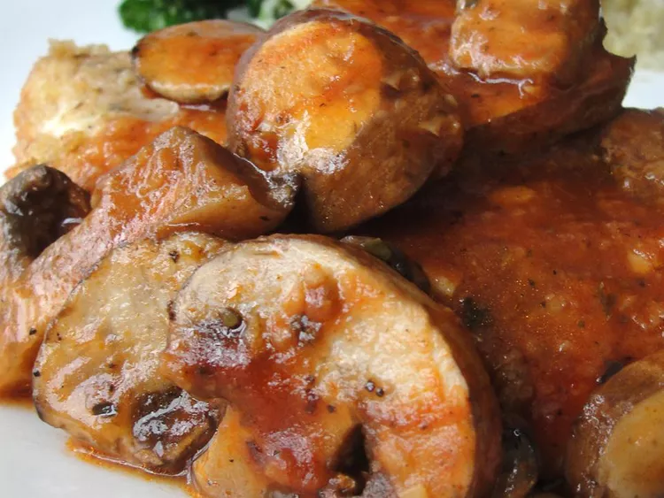

Home
Chicken Pot

Description
One skillet chicken recipe that should be served with a grain of sorts. Bread would work.
Ingredients
- 0.75 cup (177 ml) chicken broth
- 1.5 tbsp tomato paste
- 0.25 tsp ground black pepper
- 0.5 tsp dried oregano
- 0.125 tsp salt
- 1 clove garlic, minced
- 4 boneless, skinless chicken breast halves
- 3 tbsp dry bread crumbs
- 2 tsp olive oil
- 2 cups (454 g) fresh sliced mushrooms
Steps
- In a medium bowl, combine the broth, tomato paste, ground black pepper, oregano, salt and garlic. Mix well and set aside.
- Dredge the chicken in the bread crumbs, coating well. Heat the oil in a large skillet over medium high heat. Saute the chicken in the oil for 2 minutes per side, or until lightly browned.
- Add the reserved broth mixture and the mushrooms to the skillet and bring to a boil. Then cover, reduce heat to low and simmer for 20 minutes. Remove chicken and set aside, covering to keep it warm.
- Bring broth mixture to a boil and cook for 4 minutes, or until reduced to desired thickness. Spoon sauce over the chicken and serve.